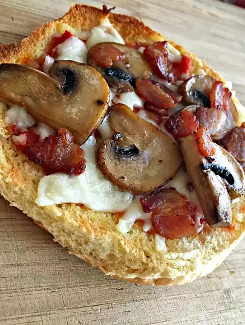

Quick and Easy Pizza

Description
Quick and Easy Pizza without all the hassle. Using buns instead of dough you can make great mini-pizzas.
Ingredients
- 8 Ball Park Hot Dog Buns
- 2 cups of tomato sauce
- 3 teaspoons of garlic granules
- 3 teaspoons of dried italian herb blend
- 1 teaspoon of sweet paprika
- 1 teaspoon of kosher salt
- 1 teaspoon of ground black pepper
- 1 pound bulk mild italian sausage
- 2 tablespoons extra virgin olive oil
- 1 teaspoon garlic granules
- 1 teaspoon dried italian herb blend
- 1/2 pound pepperoni slices
- 1 cup of grates mozzarella cheese
- 1/2 cup of grated Parmesan cheese
- 3 sprigs of Fresh oregano
- 1 pinch of crushed red pepper
Steps
- To make the sauce, combine tomato sauce, garlic, 3 teaspoons herb, paprika, salt, and pepper in a sauce pan over medium-high heat.
- When sauce bubbles, reduce to a low simmer and stir. Cover and allow to simmer over very low heat for 15 minutes.
- Crumble Italian sausage in a pan and cook over medium heat until no longer pink, about 15 minutes. Drain over paper towels and set aside.
- Preheat oven to 400 degrees F.
- Mix olive oil, garlic, and 1 teaspoon herb blend in a small bowl.
- Open hot dog buns and arrange on a sheet pan covered in foil.
- Separate buns in halves along the folds if you want to make 16 appetizers; leave whole if you want to make 8 pizzas.
- Brush the buns with olive oil mixture
- Toast buns in the oven for about 5 minutes, just until the edges begin to brown.
- Remove pan from oven and spread each of the buns with the warm tomato sauce.
- Top with browned Italian sausage, pepperoni slices, mozzarella and Parmesan cheeses.
- Return pan to the oven and bake at 400 degrees F for 10 minutes or until cheeses are bubbling.
- Serve garnished with fresh oregano leaves and crushed red pepper, if desired.